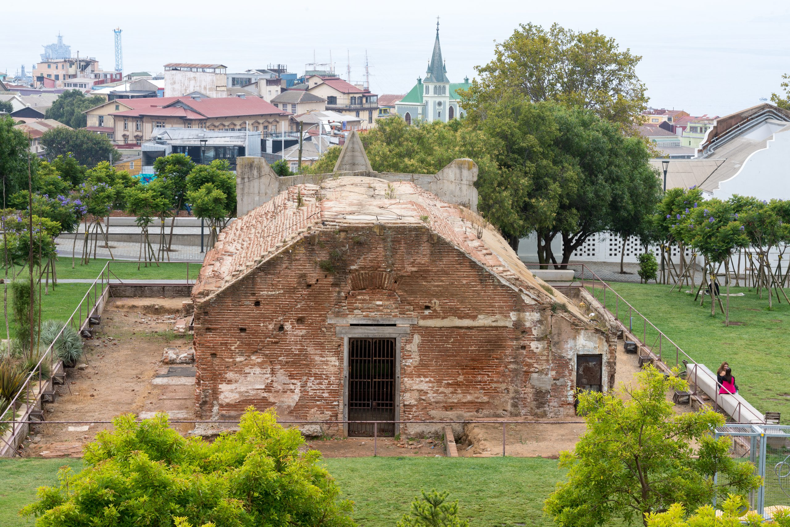

Casa de Pólvora
Construcción de origen colonial que formó parte del antiguo sistema defensivo de Valparaíso y constituye uno de los elementos históricos centrales del Parque.
Conoce su historia
Este edificio forma parte del patrimonio arquitectónico que permite reconocer los distintos usos históricos del recinto.